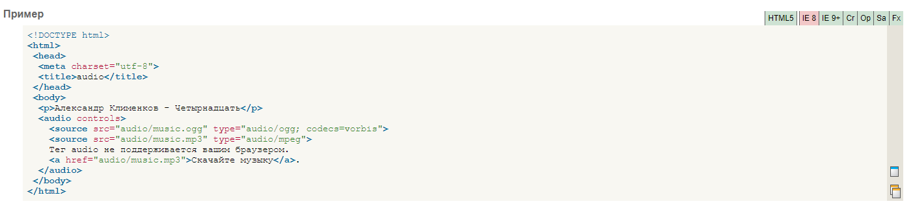

Описание
Тег:
-audio-
- Добаfвляет, воспроизводит и управляет настройками аудиозаписи на веб-странице.
Путь к файлу задается через атрибут src или вложенный тег -source-. Внутри контейнера -audio- можно написать текст,
который будет выводиться в браузерах, не работающих с этим тегом.
